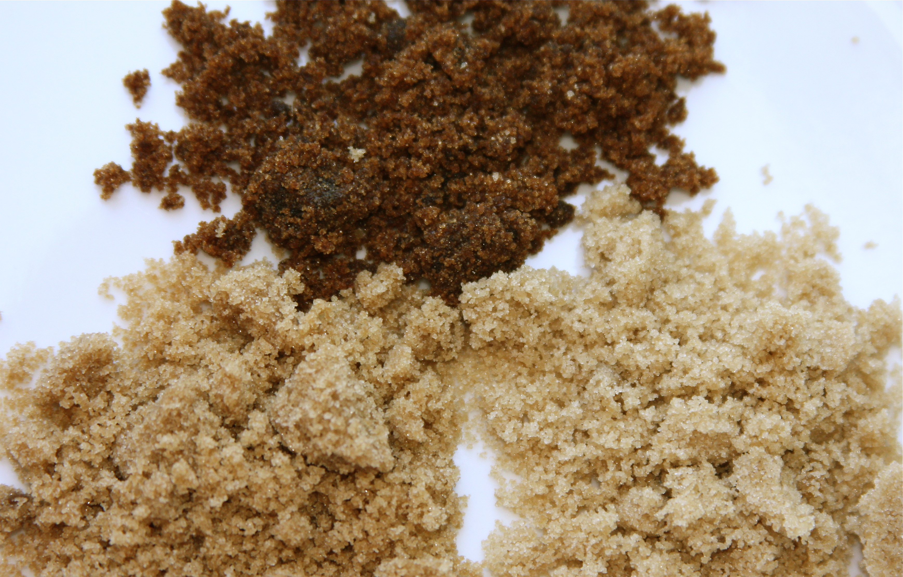
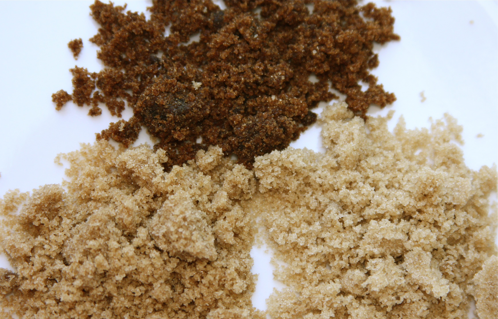

Double Chocolate Cookies
Origin: Michigan
Source: Family Recipe
Category: Dessert

My daughter learned to make these cookies at a baking camp at Zingermanns and has tweaked the recipe to fit the taste buds of her siblings. They are extremely sugary so the salt helps to balance it. Note, these cookies are best eaten very quickly
Recipe Ingredients
- Unsalted butter
- Granulated Sugar
- Packed light or dark brown sugar
- Large egg
- Pure vanilla extract
- Semi-sweet chocolate chunks (melted)
- All-purpose flour
- Natural unsweetened cocoa powder
- Baking soda
- Salt
Recipe Steps
- In a mixing bowl cream together the butter, granulated sugar, and brown sugar
- Add the egg and vanilla extract and beat well
- Add the melted chocolate
- In a separate bowl combine the flour, baking soda, cocoa powder and salt
- Combine the wet and dry ingredients
- Add the unmelted chocolate chunks
- Form 15 cookies and place on a baking sheet
- Cook for 12 to 13 minutes at 350 degrees
Additional Food Images
 

Banana Bread
Origin: American
Source: Family Recipe
Category: Dessert
I learned how to make banana bread when I was a child baking them with my mom. My mom learned it from her mom.
Recipe Ingredients
- Ripe bananas
- Unsalted butter
- Granulated sugar
- Two large eggs
- All-purpose flour
- Baking soda
- Vanilla extract
- Salt
Recipe Steps
- Preheat the oven to 350
- In a mixing bowl, mix together the softened butter and sugar
- Mash the bananas with a fork and add to the mixing bowl with the eggs, blending until smooth
- In a separate bowl whisk together the flour, baking soda, and salt
- Combine the wet and dry ingredients
- Pour the mixture into a loaf pan and bake for 50-60 minutes
Additional Food Images
Oatmeal Cookies
Origin: Sweden
Source: Family Recipe
Category: Dessert

My gradma made these cookies for Christmas every year. They are from her 60 year old cookbook that she brought from Sweden. I started making these when I moved away for college.
Recipe Ingredients
- Rolled oats
- Butter
- Granulated sugar
- An egg
Recipe Steps
- Preheat the oven to 350
- Melt the butter over low heat in a saucepan, add the oatmeal and cook until the oats are browned
- Whisk the egg and sugar together until fluffy
- Fold the butter and oats into the egg mixture
- Form cookies on a baking sheet
- Bake for 9-10 minutes